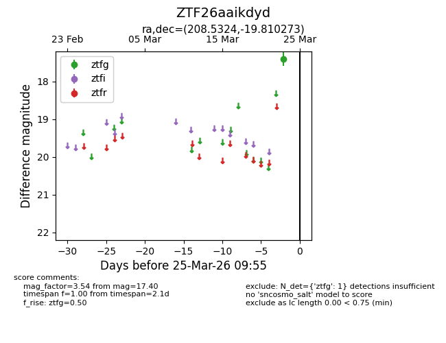
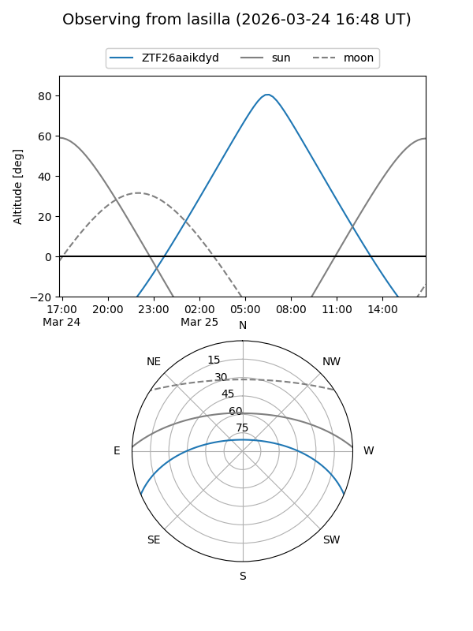
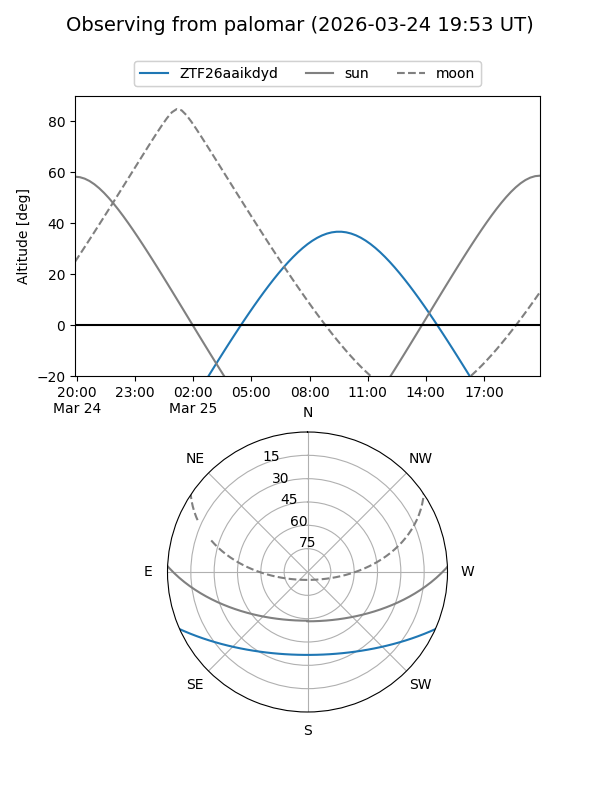

ZTF26aaikdyd
Target ZTF26aaikdyd at 2026-03-25 09:58
Aliases and brokers:
FINK: link
Lasair: link
ALeRCE: link
alt names
ZTF26aaikdyd (ztf,fink_ztf)
Coordinates:
equatorial (ra, dec) = 208.5324,-19.81027
equatorial (HMS+DMS) = 13:54:07.77,-19:48:36.98
galactic (l, b) = (322.5088,+40.66619)
Flags:
Photometry:
last ztfg=17.40
1 ztfg detections
Lightcurve

Visibility


Additional plots